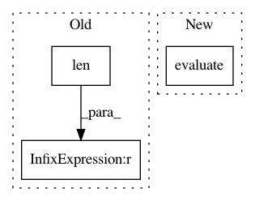

2facd966a7258e97bdb04431d43a46632c5212ec,demo/Model/neo_models.py,Neo4j,findRelationByEntities,#Neo4j#Any#Any#,56
Before Change
answer = self.graph.data("MATCH (n1:HudongItem {title:\"" + entity1 + "\"})- [rel] -> (n2:HudongItem{title:\""+entity2+"\"}) RETURN n1,rel,n2" )
if(len(answer) == 0):
answer = self.graph.data("MATCH (n1:HudongItem {title:\"" + entity1 + "\"})- [rel] -> (n2:NewNode{title:\""+entity2+"\"}) RETURN n1,rel,n2" )
if(len(answer) == 0):
answer = self.graph.data("MATCH (n1:NewNode {title:\"" + entity1 + "\"})- [rel] -> (n2:HudongItem{title:\""+entity2+"\"}) RETURN n1,rel,n2" )
if(len(answer) == 0):
answer = self.graph.data("MATCH (n1:NewNode {title:\"" + entity1 + "\"})- [rel] -> (n2:NewNode{title:\""+entity2+"\"}) RETURN n1,rel,n2" )
After Change
if(answer is None):
answer = self.graph.run("MATCH (p1:HudongItem {title:\"" + entity1 + "\"}),(p2:NewNode {title:\""+entity2+"\"}),p=shortestpath((p1)-[rel:RELATION*]-(p2)) RETURN p").evaluate()
if(answer is None):
answer = self.graph.run("MATCH (p1:NewNode {title:\"" + entity1 + "\"}),(p2:HudongItem{title:\""+entity2+"\"}),p=shortestpath((p1)-[rel:RELATION*]-(p2)) RETURN p").evaluate()
if(answer is None):
answer = self.graph.run("MATCH (p1:NewNode {title:\"" + entity1 + "\"}),(p2:NewNode {title:\""+entity2+"\"}),p=shortestpath((p1)-[rel:RELATION*]-(p2)) RETURN p").evaluate()
//answer = self.graph.data("MATCH (n1:HudongItem {title:\"" + entity1 + "\"})- [rel] -> (n2:HudongItem{title:\""+entity2+"\"}) RETURN n1,rel,n2" )
//if(answer is None):
In pattern: SUPERPATTERN
Frequency: 3
Non-data size: 3
Instances
Project Name: qq547276542/Agriculture_KnowledgeGraph
Commit Name: 2facd966a7258e97bdb04431d43a46632c5212ec
Time: 2018-10-25
Author: kjmd2d@sina.cn
File Name: demo/Model/neo_models.py
Class Name: Neo4j
Method Name: findRelationByEntities
Project Name: cornellius-gp/gpytorch
Commit Name: 38a40828ec688be626e51ebcb1a60a54479fd997
Time: 2017-08-29
Author: ruihan.wu14@gmail.com
File Name: gpytorch/lazy/toeplitz_lazy_variable.py
Class Name: ToeplitzLazyVariable
Method Name: diag
Project Name: eth-cscs/reframe
Commit Name: 94d3a48e32def7fcc35d13d179acb54aa3c51b05
Time: 2018-12-09
Author: karakasis@cscs.ch
File Name: cscs-checks/cuda/multi_gpu.py
Class Name: GpuBandwidthCheck
Method Name: do_sanity_check